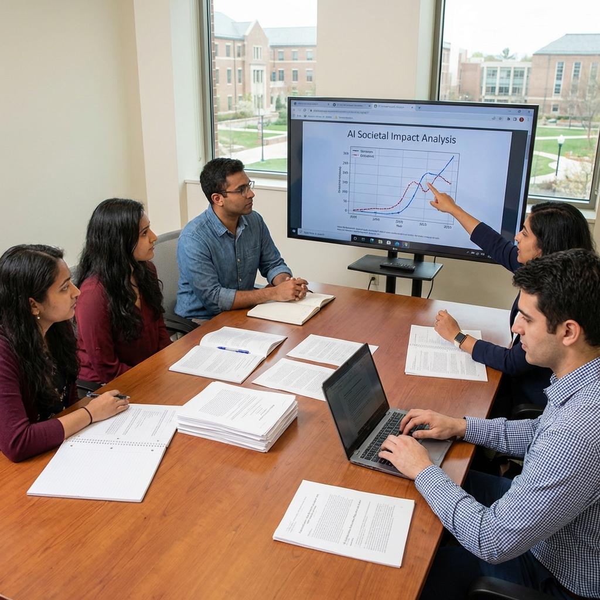

While most AI companies focus on building more powerful models, Anthropic is investing $100 million in understanding what happens after they're built. The Anthropic Institute, launched March 11, 2026, represents one of the most significant corporate investments in studying AI's societal implications—and a bet that understanding these impacts is as important as creating the technology itself.
The Institute's mandate is broad: research how powerful AI systems will affect economies, political systems, social structures, and individual wellbeing. Then share those findings with researchers, policymakers, and the public. It's an unusual commitment for a for-profit company, and it raises an obvious question: why is Anthropic doing this?
The Research Agenda
The Anthropic Institute isn't focused on technical AI research—there are plenty of labs doing that. Instead, it's studying second-order effects: how AI transforms labor markets, how it changes political discourse, how it affects mental health, how it concentrates or distributes economic power. These are questions that require sociologists, economists, political scientists, and ethicists as much as computer scientists.
Initial research priorities include:
- Labor market transformation and workforce adaptation strategies
- AI's impact on democratic institutions and public discourse
- Economic concentration and the distribution of AI-generated wealth
- Mental health effects of AI-mediated social interaction
- Governance mechanisms for autonomous AI systems
Transparency as Strategy

The Institute's commitment to sharing findings publicly is notable. Research outputs will include academic publications, policy briefs, and accessible summaries for general audiences. Anthropic is explicitly positioning itself as a source of credible, independent research on AI's societal effects—even when those findings might be uncomfortable for the company.
This transparency serves multiple purposes. It builds trust with regulators and civil society organizations who are increasingly skeptical of AI companies' self-serving narratives. It attracts talent—researchers who want to work on meaningful problems with real resources. And it potentially shapes the conversation: if Anthropic's research defines how we understand AI's impacts, Anthropic benefits from that framing.
The $100 Million Question
A hundred million dollars is serious money, even for a company valued at $380 billion. Why invest so heavily in research that doesn't directly improve Claude's capabilities or Anthropic's bottom line?
Part of the answer is defensive. As AI becomes more powerful, the companies building it face increasing scrutiny and regulatory pressure. Having credible, independent research on AI's societal impacts gives Anthropic a seat at policy tables and a defense against accusations of recklessness. It's reputation insurance.
But there's also a genuine belief—widely shared at Anthropic—that building powerful AI without understanding its impacts is irresponsible. The company's founding mission emphasizes AI safety and beneficial outcomes. The Institute is a logical extension of that commitment: not just building safe systems, but understanding what "safe" means in a societal context.
Partnerships and Independence
The Institute is structured to maintain academic independence while benefiting from Anthropic's resources. Research grants are available to external scholars, with funding decisions made by an independent review board. Anthropic employees can collaborate on research, but they don't control the agenda or the findings.
This structure attempts to thread a difficult needle: provide enough independence that research is credible, while maintaining enough connection to Anthropic that findings are relevant to real AI systems. Whether it succeeds depends on whether outside researchers believe the independence is genuine—and whether Anthropic can resist the temptation to suppress inconvenient findings.
The Broader Context
The Anthropic Institute arrives at a moment when AI's societal impacts are becoming impossible to ignore. Job displacement concerns are moving from theoretical to concrete. Political systems are grappling with AI-generated content. Mental health professionals report increasing cases of AI-related distress. The questions the Institute will study are already urgent; they're only becoming more so.
Other AI companies are making similar investments, though not at this scale. OpenAI has safety research programs. Google DeepMind has an ethics team. But Anthropic's $100 million commitment is the largest dedicated effort to study AI's societal implications—and it sets a benchmark that competitors may feel pressure to match.
The Institute is a gamble: that understanding AI's impacts is possible, that such understanding can guide better decisions, and that Anthropic benefits from leading that conversation. Whether the gamble pays off won't be clear for years. But in a field obsessed with building bigger models, Anthropic's investment in understanding their consequences is a meaningful differentiator.